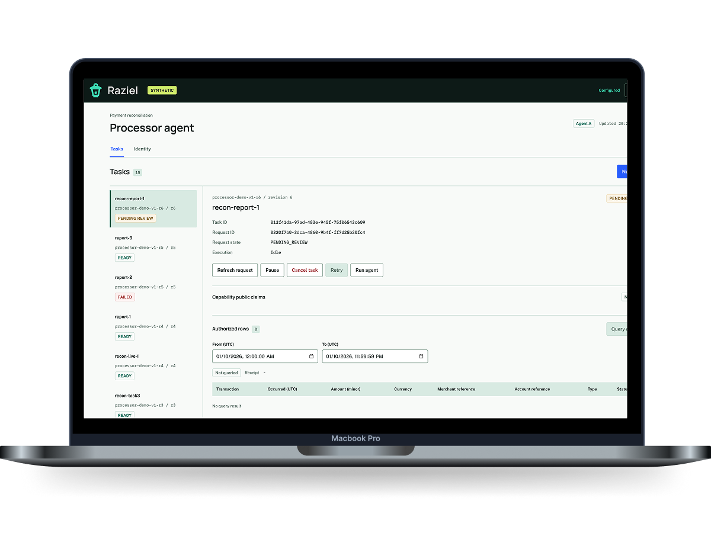
Raziel / NUS FinTech Lab
Proof-backed access for AI agents
Let agents work across services. Give each one a grant for the data it needs, backed by proof that the owner’s rule was met.
29th STePS / Select MComp, then Raziel, on UVents.
The problem
A task is not a grant.
Alice is asked to review a project. Bob’s service holds Doc 42, which only assigned reviewers can read. A token can carry a valid signature even when the issuer made the wrong access decision. Raziel lets Bob check that the decision follows the rule.
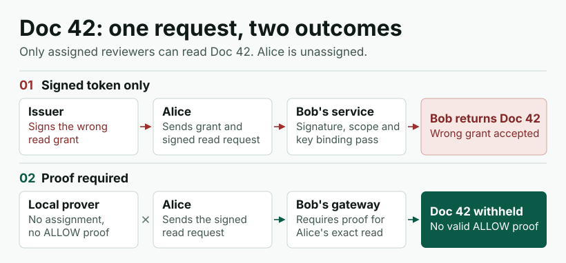
- 01
Set the rule
The owner approves a policy. Raziel compiles supported SpiceDB rules into a form the SP1 program can evaluate.
- 02
Prove the grant
The prover checks the rule against a committed snapshot of relationships and proves the allowed request. The private evidence stays with the owner.
- 03
Check each read
A separate verifier checks the proof. The agent reuses its grant, and the gateway checks the signature and scope of each request.
Working prototype
Two agents. Two ledgers.
One agent reads synthetic payment-processor records. The other checks a bank settlement with a separate grant. They exchange the result, and an audit receipt traces the protected read.
Explore the demo screenshots
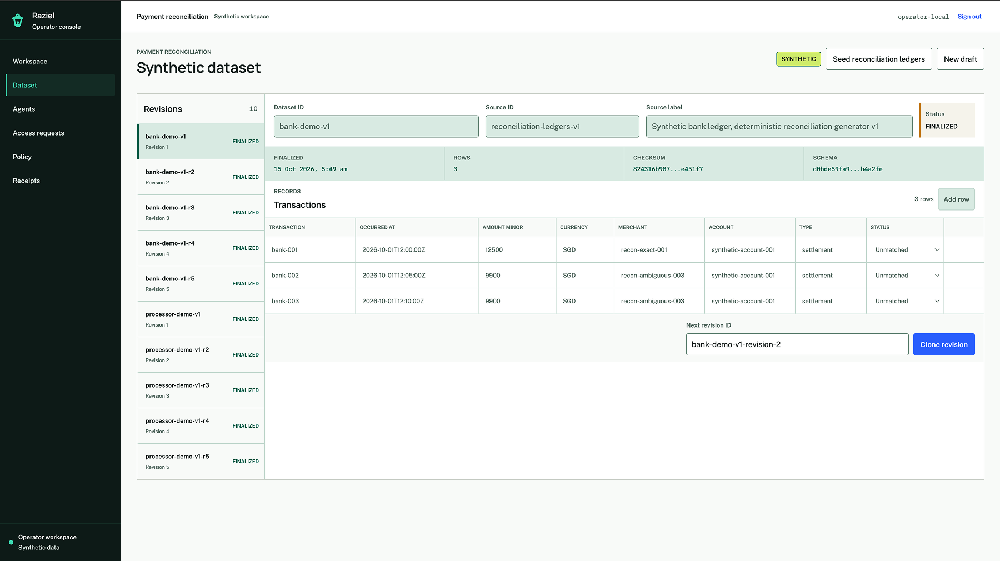
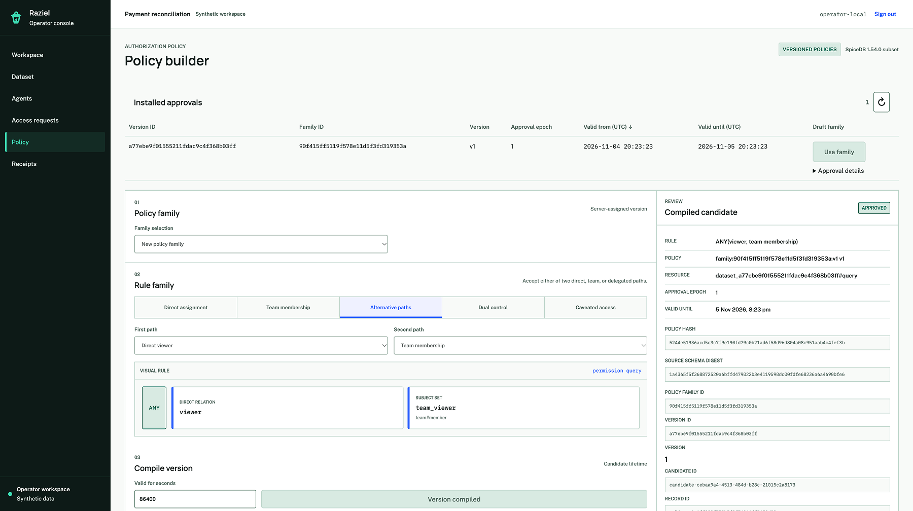
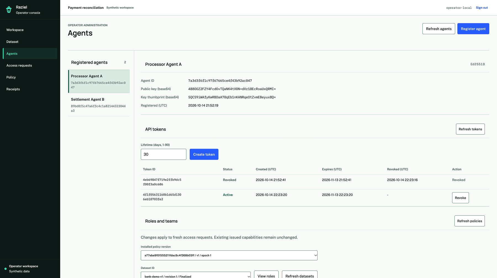
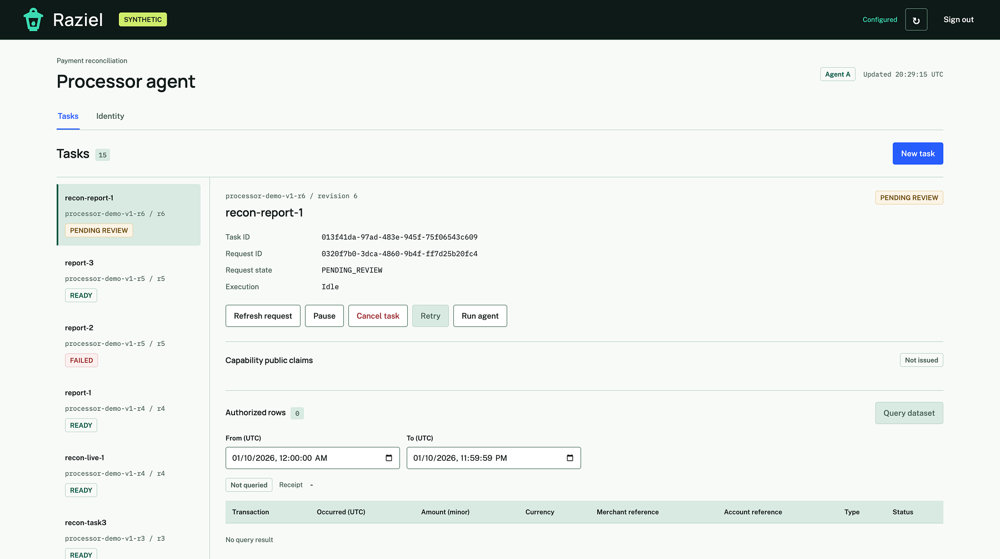
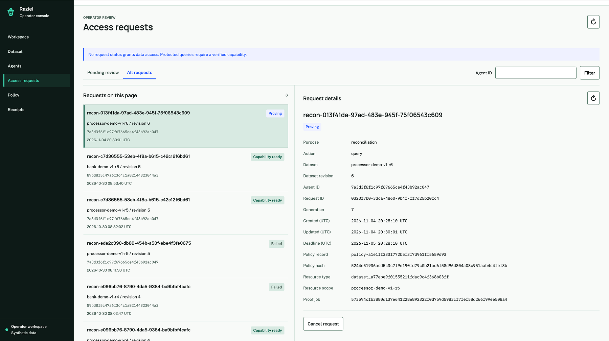
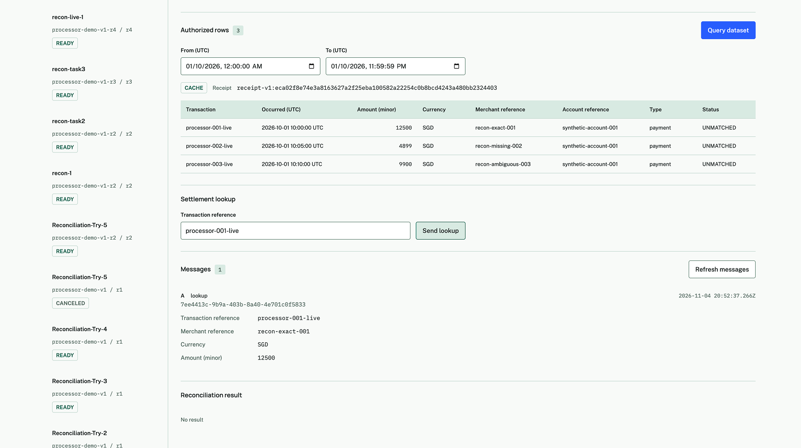
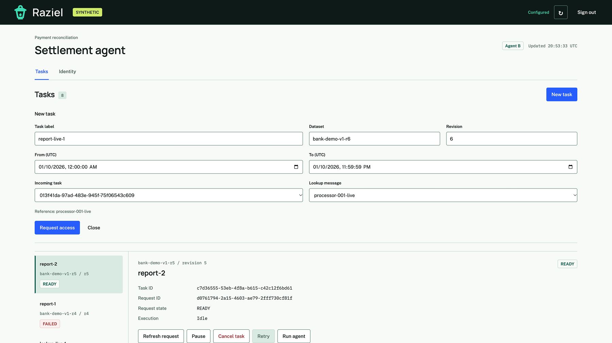
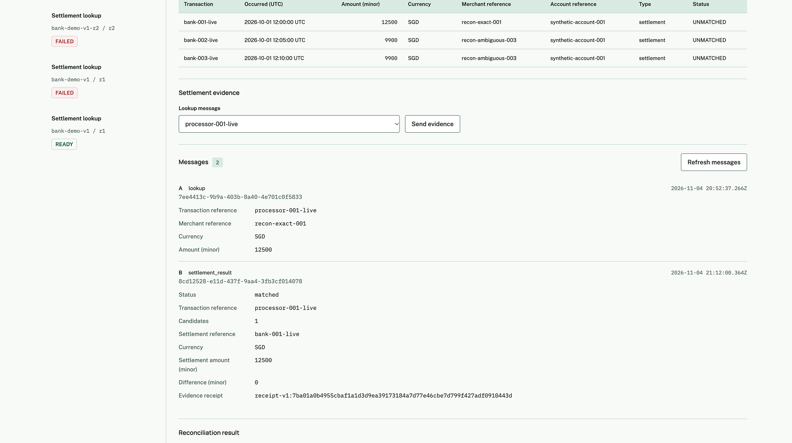
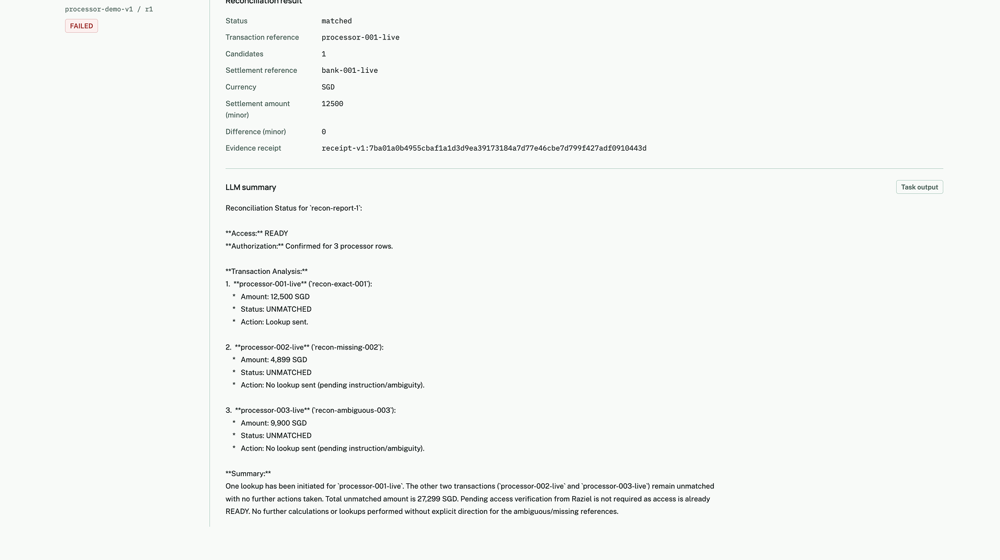
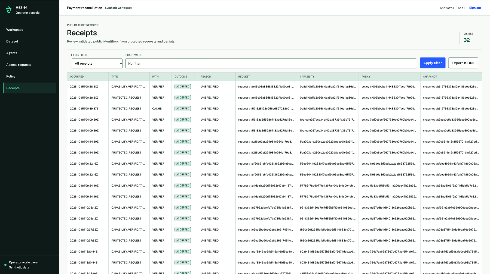
- 447 ms
- One independent proof check
- ~16 min
- One local proof generated
- 8/8
- Tampered inputs rejected
- 21/21
- Policy test decisions matched SpiceDB
Proving and verification were measured in separate runs. Read the benchmark records.
Design partnerships
What would you let an agent do?
We’re looking for teams with a workflow that needs controlled access to sensitive data. Bring one action you’d like to delegate and one access rule it must follow.